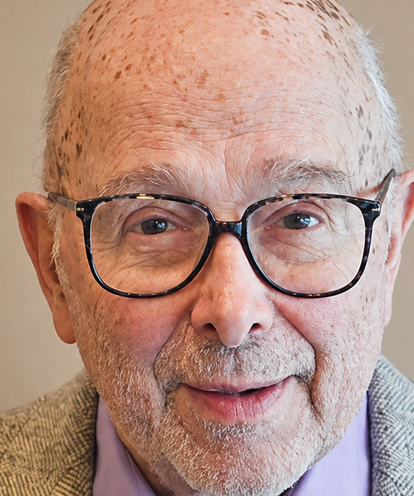
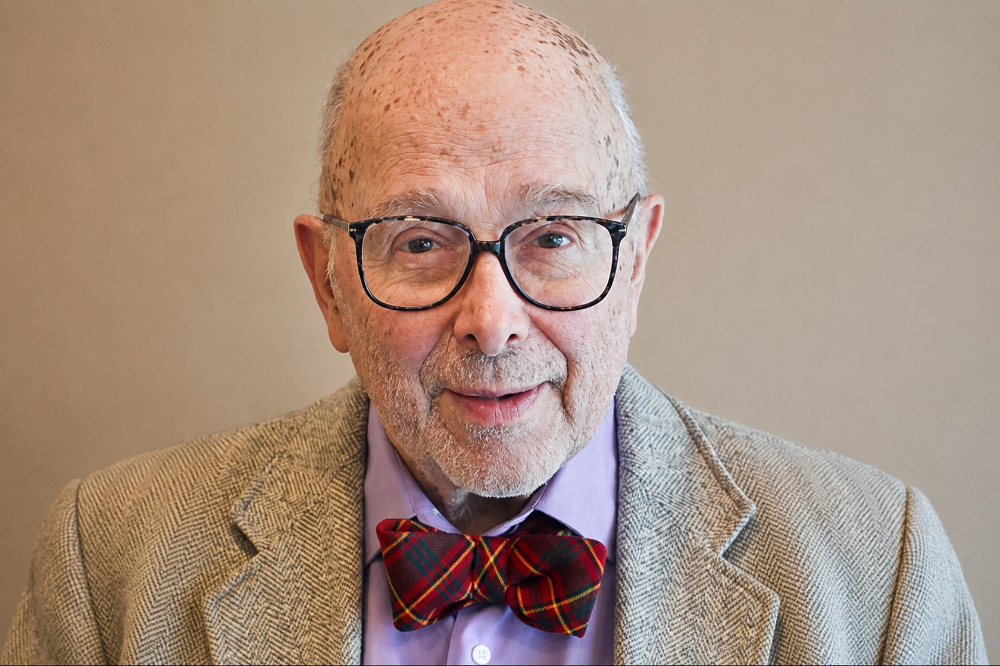

The subject
Low down you can count them. Higher up you cannot.
A nucleus can hold its energy in a finite number of arrangements. Near the ground state those arrangements are few enough to list one at a time. Raise the energy and they multiply until listing them is hopeless, and the only honest description left is a statistical one.
That multiplication is called the level density. Measuring it, and working out the rules it follows, is what he does. Ohio University calls his speciality the statistical structure of nuclei.
A level scheme. Energy rises upward, and the states crowd together as it does.
The record
Livermore, then Athens, and he never really left.
Bachelor of Science, Stanford University
The first degree. He has said his interest in the sciences began at home, helping his father, an engineer, work out the heating, cooling and electrical systems for the family house.
Master of Science, University of Wisconsin
Doctor of Philosophy, University of Wisconsin
Elected to Sigma Xi and Phi Beta Kappa during his years at Wisconsin.
Postdoctoral fellow, Basel and Livermore
A year at the University of Basel in Switzerland, then a year at Lawrence Livermore National Laboratory in California.
Physicist, Lawrence Livermore National Laboratory
Hired by the laboratory that had just hosted him. He stayed ten years.
Visiting professor, Ohio University
Teaching in Athens while still on the Livermore staff. In the spring of the following year the university photographed him sitting on top of the newly installed magnetic quadrupole triplet spectrometer in the large target room, alongside Roger Finlay and Jacobo Rapaport.
Ohio University, Edwards Accelerator Laboratory at 50Professor of Physics, Ohio University
Full time, and the end of the Livermore decade. The university's own register puts it plainly: he came to Ohio University from Lawrence Livermore National Laboratory in 1981.
Ohio University, Distinguished Professor registerDirector, Edwards Accelerator Laboratory
Running the accelerator as well as using it.
Distinguished Professor, Ohio University
The university's highest faculty honour. Its citation records his research interests as MeV neutron cross sections measured with time‑of‑flight techniques.
Ohio University, Distinguished Professor register · Physics, 2001Outstanding Referee
For the work of reading other physicists' papers, which is unpaid, anonymous and the reason the literature holds together.
Still first author
Fifty-one years after the doctorate, a paper on the level density rotational enhancement factor in Physical Review C, with his Ohio University colleagues T. N. Massey and A. V. Voinov.
Distinguished Professor Emeritus
Consulting for Lawrence Livermore National Laboratory and for Los Alamos National Laboratory in New Mexico.
Edwards Accelerator Laboratory
It started in a garage.
Ohio University's accelerator laboratory began in 1962 with a small 150‑kV Cockcroft‑Walton machine housed in an automobile garage. A one million dollar Atomic Energy Commission grant paid for the 4.5‑MV tandem in 1967, and the first experiments ran in 1971. It is named for John E. Edwards, 1932 to 1972.
Dr. Grimes directed it until 1991. The neutron work that runs through his publications — cross sections, evaporation spectra, level densities — is work done on that machine.
Source: Ohio University, Edwards Accelerator Laboratory at 50
Published
The most recent one, in full.
He has contributed to a great many articles in the professional and scientific journals. Rather than count them, here is the latest, set out the way a physicist would expect to read it.
“Level density rotational enhancement factor,”
Physical Review C 99, 064331 — published 27 June 2019.
doi.org/10.1103/PhysRevC.99.064331 Affiliation as printed: Department of Physics and Astronomy, Ohio University, Athens, Ohio 45701, USA. S. M. Grimes, first and corresponding author.
- Edited
- Moment Methods, 1979
- Edited
- Neutron-Nucleus Collisions, 1985
- Fields
- Nuclear level densities · neutron‑nucleus reactions · MeV neutron cross sections by time‑of‑flight · nuclear astrophysics
- Consulting
- Lawrence Livermore National Laboratory · Los Alamos National Laboratory
Recognition
- 2001
- Distinguished Professor, Ohio University. The university's highest faculty honour, listed under Physics in its register of recipients.
- Emeritus
- Distinguished Professor Emeritus, Department of Physics and Astronomy, Ohio University.
- Fellowship
- Fellow of the American Physical Society.
- 2008
- Outstanding Referee.
- Societies
- Sigma Xi · Phi Beta Kappa
- Listed
- Who’s Who in America, 72nd edition

Away from the desk
Reading, photography, travel.
On what should draw the next generation into the field, he has said they ought to be personally invested in the subject and find it genuinely captivating — which is a fair description of a man still publishing five decades after his doctorate.
Contact
Enquiries reach him through the department.
For research correspondence, consulting enquiries, or requests to speak.
- Department
- Department of Physics and Astronomy, Ohio University, Athens, Ohio 45701
- Laboratory
- Edwards Accelerator Laboratory